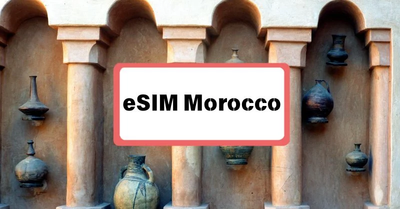

Marruecos con Niños: Guía para Viajar en Familia
Itinerario adaptado, actividades que les encantan y consejos prácticos para un viaje en familia sin estrés.
Consejos para Viajar a Marruecos por Primera Vez
10 consejos prácticos: documentos, dinero, ropa, seguridad y regateo.
Royal Air Maroc: ¿Merece la Pena Volar con Ella?
Rutas desde España, equipaje incluido y comparativa con las aerolíneas low cost.
¿Volar a Casablanca o a Marrakech?
Diferencias en vuelos, precios y cuál conviene según tu ruta.
Las Ciudades Imperiales de Marruecos
Fez, Marrakech, Meknes y Rabat: qué las hace especiales y cómo visitarlas.
6 Ciudades Imprescindibles de Marruecos
Marrakech, Fez, Chefchaouen, Merzouga, Agadir y Tánger: qué hace única a cada una.
Palabras en Marroquí para Viajar
Saludos, cortesía, números y frases útiles en darija, con pronunciación fácil.
Tour Privado vs. Compartido en Marruecos: ¿Cuál Elegir?
Diferencias reales en precio, horarios, paradas y comodidad.
Tours en Grupo por Marruecos: Guía para Organizarlos
Vehículos según el tamaño del grupo, ahorro por persona e ideas para familias, amigos y empresas.
Viajar a Marruecos Siendo Estudiante
Presupuesto ajustado, cuándo ir y cómo organizar un viaje de grupo.
8 Días en Marruecos: Itinerario Completo
Chefchaouen, Fez, el desierto del Sahara, el valle del Dadès y Marrakech.
14 Días desde Casablanca: Gran Circuito por Marruecos
Rabat, Tánger, Chefchaouen, Fez, el desierto, Essaouira y Marrakech, día a día.
4 Días desde Marrakech hasta el Desierto
Ait Benhaddou, Ouarzazate, el valle del Dadès, Merzouga y vuelta por Telouet.
Vacunas para Viajar a Marruecos
Vacunas obligatorias, recomendadas, malaria y cuándo consultar un centro de vacunación.
Agua Potable en Marruecos: Qué Debes Saber
Hielo, comida lavada, alternativas al plástico y consejos para evitar problemas de estómago.
¿Es Obligatorio el Billete de Vuelta para Entrar a Marruecos?
Quién lo comprueba realmente y qué hacer si viajas solo de ida.
Qué No Puedes Llevar a Marruecos: Guía de Aduanas
Armas, drones sin permiso, walkie-talkies y límites de divisas: cómo evitar problemas en la aduana.
¿Es Seguro Viajar a Marruecos Tras el Terremoto?
Qué zonas turísticas funcionan con normalidad hoy en día y qué debes saber antes de reservar.
Estafas con Taxis en Marruecos: Cómo Evitarlas
Taxímetros "rotos", rutas más largas de lo necesario y sobreprecios en el aeropuerto.

ComparativaMejor Tarjeta SIM para Marruecos: Comparativa
Maroc Telecom, Orange e Inwi: cobertura, paquetes y cómo elegir según tu ruta.
Internet y Wifi en Marruecos: Guía Completa
Tarjetas SIM, eSIM, precios y wifi en hoteles, riads y el desierto.
Qué Está Prohibido en Marruecos: Guía Legal para Turistas
Drones, alcohol, fotografía y drogas: normas legales que conviene conocer antes de viajar.
Propinas en Marruecos: Cuánto Dar y a Quién
Restaurantes, guías, conductores, desierto, hoteles y taxis, con importes orientativos.
Cómo Pagar en Marruecos: ¿Tarjeta o Efectivo?
El dirham, dónde se acepta tarjeta, cajeros y qué hacer con el efectivo sobrante.
¿Es Ético Montar en Dromedario en Marruecos?
Qué hace que un paseo en camello sea respetuoso con el animal y cómo elegir un operador responsable.
Paquete Turístico a Marruecos Todo Incluido: Qué Trae Realmente
Qué suele incluir un tour todo incluido, qué no, y cómo elegir bien antes de reservar.
Ruta por el Norte de Marruecos: Guía Completa
Tánger, Tetuán, Chefchaouen y Asilah en un itinerario de 4-5 días.
Ruta de 1 Día: Marrakech a las Cascadas de Ouzoud
Cómo llegar, qué ver, el paseo en barca, los monos y un itinerario hora a hora.
Ramadán en Marruecos: Cómo Afecta al Viajero
Horarios de restaurantes, qué cambia en las ciudades y consejos de respeto para viajar en estas fechas.
Cómo Regatear en los Zocos de Marruecos
Técnica paso a paso, cuánto rebajar según el producto y errores comunes que evitar.
Comida Marroquí: 10 Platos que Debes Probar
Tajín, cuscús, pastela, harira y más: los imprescindibles y dónde probarlos.
Qué Llevar en la Maleta para Marruecos: Lista Completa
Ropa por temporada, qué llevar para el desierto y objetos imprescindibles que muchos olvidan.
Excursión de 1 Día al Desierto desde Marrakech: ¿Vale la Pena?
Por qué Merzouga no es realista en 24h y cuál es la alternativa que sí funciona.
Ruta en Coche por Marruecos de 7 Días: Guía Práctica
Itinerario día a día con kilómetros, alquiler de coche y consejos para conducir por el país.
Essaouira: la Joya Menos Conocida de Marruecos
Qué ver, su historia, cómo llegar desde Marrakech y cuándo ir a la ciudad amurallada del Atlántico.
Qué Ver en Marrakech en 3 Días: Itinerario Completo
Medina y zocos, Jardín Majorelle y Gueliz, y una excursión al Atlas o al desierto de Agafay.
Mujer Viajando Sola a Marruecos: Guía de Seguridad 2026
Alojamiento, ropa, transporte, acoso callejero y si es seguro ir sola al desierto.
Mitos y Realidad de Viajar a Marruecos
Seguridad, mujeres viajando solas, alcohol, ropa y timos: separamos lo real de lo exagerado.
10 Días en Marruecos: Itinerario para tu Primer Viaje
Día a día, desde Chefchaouen y Fez hasta el desierto del Sahara y Marrakech.
Viajar a Marruecos por Libre: Guía Completa 2026
Trenes, autobuses, grand taxis, alquiler de coche, presupuesto e itinerario de ejemplo.
Vuelos Baratos a Marruecos desde España: Guía 2026
Mejores ciudades de salida, aerolíneas low cost, cuándo reservar y trucos reales para ahorrar.
Viajar de Barcelona a Marruecos: Vuelos y Precios 2026
Vuelos directos a Marrakech, Casablanca y Tánger, duración, precios orientativos y la alternativa del ferry.
¿Es Seguro Viajar a Marruecos? La Verdad en 2026
Delincuencia, timos más comunes, viajar sola como mujer y seguridad en el desierto, sin exagerar.
Turismo en Marruecos: Guía Completa 2026
Tipos de turismo, los destinos más visitados, cuándo ir, cuánto cuesta y cómo organizar tu ruta por el país.
España a Marruecos: Ferry, Avión y Precios 2026
Ferry desde Algeciras y Tarifa, vuelos directos desde Madrid, Barcelona y Málaga, precios orientativos y qué documentos llevar.
¿Necesitas Visado para Marruecos? Guía de Documentos 2026
Pasaporte, validez mínima, tiempo de estancia y checklist de documentos antes de viajar a Marruecos.
Qué ver en Marrakech y Marruecos: guía completa 2026
Lo más bonito del país, cuántos días necesitas, qué pueblos visitar cerca de Marrakech y cuáles son las mejores excursiones. Con tours en español para cada itinerario.
Excursión al Desierto de Merzouga desde Marrakech: Guía Completa
La mejor ruta, cuánto se tarda, si es seguro, cuánto cuesta y si merece la pena visitar el Sahara desde Marrakech. Todo lo que necesitas saber antes de reservar.
¿Cuál es la Mejor Fecha para Viajar a Marruecos?
Clima mes a mes, cuándo ir al desierto, a Marrakech y a la costa, y qué épocas conviene evitar.
¿Marruecos es un País Caro o Barato? Guía de Precios
Cuánto cuesta comer, dormir, moverte y hacer excursiones. Precios reales para planear tu presupuesto.
¿Qué Merece la Pena Comprar en Marruecos?
Alfombras bereberes, cerámica de Fez, aceite de argán, cuero y especias: qué comprar y cómo regatear.
5 Cosas Curiosas de Marruecos que Seguro No Sabías
La universidad más antigua del mundo, "Ouallywood" en el desierto, el té a la menta y más.
Qué Visitar en Marruecos en 7 Días: Itinerario Completo
Chefchaouen, Fez, el desierto del Sahara, las kasbahs del sur y Marrakech, día a día.
Qué Conocer en Marruecos en 3 Días: Rutas Recomendadas
Dos rutas cortas, día a día, para vivir el desierto del Sahara incluso con poco tiempo.
¿Qué es lo Más Famoso de Marruecos?
El Sahara, Jemaa el-Fna, el té a la menta, Chefchaouen y la artesanía tradicional.
Los 8 Lugares Imperdibles de Marruecos
La lista de comprobación que usamos nosotros mismos al diseñar nuestros itinerarios.
¿Cuál es el Pueblo Más Bonito de Marruecos?
Chefchaouen, Ait Benhaddou e Imlil: tres candidatos muy distintos entre sí.
¿Qué Ver en Marrakech sin Pagar?
Jemaa el-Fna, los zocos, la Koutoubia y las murallas: los mejores planes gratis.
¿Qué Ver en Marrakech en 1 Día? Itinerario Hora a Hora
El Palacio de la Bahía, la Madrasa Ben Youssef, los zocos y Jemaa el-Fna en un solo día.
¿Qué Merece la Pena Comprar en Marrakech?
Souk Semmarine, la plaza de las especias y qué encontrar en cada zona de los zocos.
¿Dónde se Alojan las Celebridades en Marrakech?
La Mamounia, el Royal Mansour y Amanjena: los hoteles de lujo más famosos.
¿Cómo Debe Vestir una Mujer Turista en Marruecos?
Consejos prácticos y realistas, sin mitos, para ciudades, zocos, desierto y costa.
¿Fez o Marrakech? ¿Cuál es Mejor Visitar?
Diferencias entre ambas ciudades imperiales y por qué no hace falta elegir.
¿Merece la Pena Visitar Fez?
Por qué la medina medieval de Fez es una de las visitas más recomendables.
Qué Ver en la Medina de Fez: La Guía Definitiva
Bab Boujloud, la Universidad de Al-Qarawiyyin, las madrasas y las curtidurías de Chouara, a fondo.
¿Qué se Puede Visitar en Fez?
El Palacio Real, la Mellah, las curtidurías de Chouara y la Universidad de Al-Qarawiyyin.
¿Cuántos Días Necesitas en Fez?
Con 1 día completo ves lo esencial; con 2, puedes ir con calma.
¿Qué Evitar en Fez? Consejos Prácticos
Falsos guías, calzado adecuado y cómo moverte por los callejones de la medina.
¿Hay un Tour de 3 Días de Fez a Marrakech por el Desierto?
Sí: cruza el Medio Atlas, el desierto de Merzouga y las kasbahs del sur.
¿Merece la Pena Visitar Chefchaouen? Guía Completa 2026
Historia de la ciudad azul, qué ver, naturaleza cercana y por qué la recomendamos sin dudarlo.
¿Cuánto Tiempo Necesito en Chefchaouen?
Con medio día ves lo esencial; con 2 días puedes subir a las cascadas de Akchour.
¿Qué es Mejor Visitar, Chefchaouen o Tánger?
Dos caras muy distintas del norte de Marruecos, a menos de dos horas de carretera.
¿Por Qué es Famosa Chefchaouen?
Su color azul, su historia aislada y sus mantas de lana bereber.
Publicamos nuevas guías cada mes. ¿Tienes una pregunta sobre tu viaje que no está aquí? Escríbenos y te respondemos directamente.